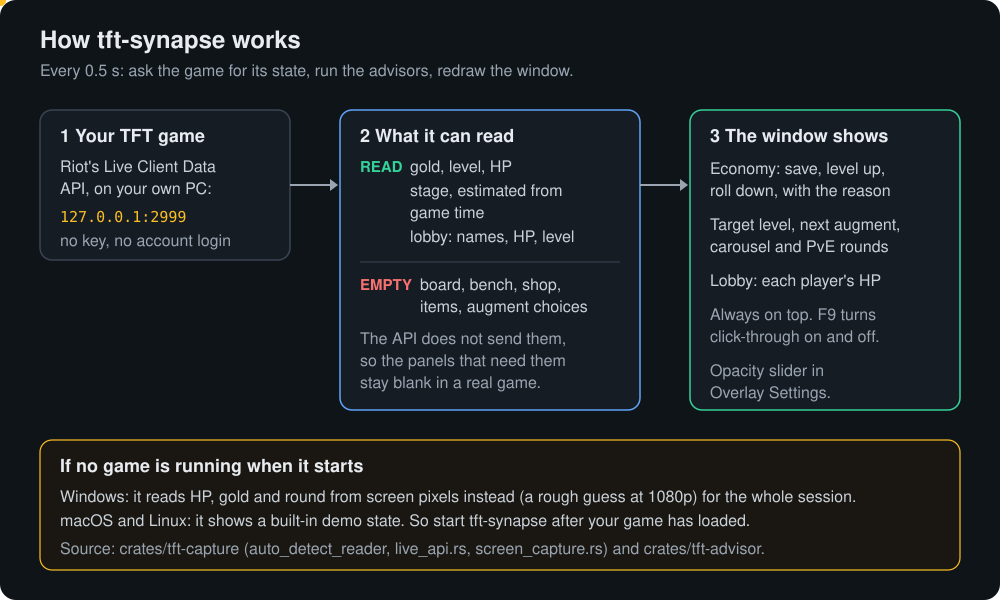

A free TFT economy and leveling helper for Windows
tft-synapse is a small always-on-top window for Teamfight Tactics. It reads your gold, level and HP from the running game and tells you when to save, level up or roll down, what level to aim for, and when the next augment, carousel and PvE round come.
macOS and Linux builds: Releases
Early version. Riot's local game API does not send your board, shop, items or augment choices, so the economy, stage and lobby advice work in a real game, and the augment, shop, board and item panels stay empty for now.
How it works

What you get in a real game
Works Economy
Save, level up or roll down, with the reason: interest thresholds, low HP, gold at the cap.
Works Stage awareness
Target level for the stage and the next augment, carousel and PvE rounds.
Works Lobby
Every player's HP and a threat level.
Empty Augments, shop, board, items
The advisors exist in the code, but the game API does not send this data.
Example advice
Real output of the advisor code for three game states (cargo run -p tft-synapse-advisor --example advise):
Stage 3-2 gold 52 HP 64 level 6 Economy: LEVEL UP. Gold at interest cap (52); leveling up from 6 improves shop odds Target level 6. Augment this round: pick carefully In 3 round(s): PvE: Raptors Stage 4-5 gold 34 HP 22 level 7 Economy: ROLL DOWN. Low HP (22): roll to find upgrades urgently Target level 8 (behind). Roll down: you're behind on levels In 6 round(s): Stage 5 carousel
Use it in 3 steps
- Start a TFT game and wait until you are in the match.
- Run
tft-synapse.exe. Windows may say "unknown publisher" because it is unsigned: click More info, then Run anyway. - Keep it beside or over the game. F9 lets clicks pass through; Alt+Tab back and press F9 again to undo. Opacity is under Overlay Settings.
Start it after the game has loaded: if no game answers at startup, it uses a rough screen-pixel reader for the whole session.